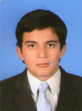

Información Personal

Perfil
Aspirante de ingeniería electrónica de último semestre en espera de grado de la Universidad Cooperativa de Colombia, con visión de trabajo en equipo y con el objetivo de crecer personal y laboralmente en beneficio de la compañía y la sociedad. Poseo sólidos conocimientos en Simulación y diseño de circuitos electrónicos en ISIS, ORCAD, MULTISIM y en tecnologías para programación de microcontroladores, PLC y FPGAs.
He forjado una gran experiencia en soporte y manteniendo de software y hardware para seguridad electrónica, reforzando conoimientos en tecnologías para desarrollo como lo son:- JAVA
- C++
- Android
- SQL server
Idiomas:
- Ingles intermedio
- Español